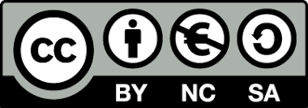

Fuentes - Licencia - Créditos
Fuentes
AA.VV., "TortuBots" [página web], en Fing [https://www.fing.edu.uy/], Uruguay, s.f. Disponible en Internet: https://www.fing.edu.uy/inco/proyectos/butia/mediawiki/index.php/TortuBots [Fecha de última consulta: octubre de 2019] CC-BY-NC-SA
ABCUPM, "Robots industriales trabajando" [video en línea], en Youtube [www.youtube.com], s.l., s.f. Disponible en Internet: https://www.youtube.com/watch?v=VWB6xd8ZQEM&feature=youtu.be [Fecha de última consulta: octubre de 2019] Licencia Youtube Standard
AGUIRRE, Andrés "Turtlebots con Lego WeDo" [video en línea], en Youtube [www.youtube.com], s.l., 23 de febrero de 2015. Disponible en Internet: https://www.youtube.com/watch?v=V-9odYBmE_8&feature=youtu.be [Fecha de última consulta: octubre de 2019] Licencia Youtube Standard
CABALLERO, Diego y J. FERREIRA, "Robótica educativa" [página web], en Robótica Salto [https://www.edusalto.uy/], Uruguay, s.f. Disponible en Internet: https://www.edusalto.uy/robotica_educativa/index.html [Fecha de última consulta: octubre de 2019] CC-BY-NC-SA
ECURED, "Robótica" [artículo en línea], en EcuRed [https://www.ecured.cu/], Cuba, s.f. Disponible en Internet: https://www.ecured.cu/Robótica [Fecha de última consulta: octubre de 2019] CC-BY-NC-SA
FACULTAD DE INGENIERÍA - INSTITUTO DE COMPUTACIÓN, "IA y Robótica. Introducción" [documento en línea], en Fing [https://www.fing.edu.uy/], Uruguay, s.f. Disponible en Internet: https://www.fing.edu.uy/inco/cursos/robotica/teorico/IAR10_Clase01_Introduccion.pdf [Fecha de última consulta: octubre de 2019] CC-BY-NC-SA
FACULTAD DE INGENIERÍA - INSTITUTO DE COMPUTACIÓN, "IA y Robótica. Trabajo de Laboratorio" [documento en línea], en Fing [https://www.fing.edu.uy/], Uruguay, 2010. Disponible en Internet: https://www.fing.edu.uy/inco/cursos/robotica/laboratorio/IAR10_laboratorio_1.pdf [Fecha de última consulta: octubre de 2019] CC-BY-NC-SA
FUNDACIÓN TELEFÓNICA ECUADOR, "¿Qué es un robot?" [video en línea], en Youtube [www.youtube.com], Ecuador, 28 de julio de 2015. Disponible en Internet: https://www.youtube.com/watch?v=UdolAbBfl1Q&feature=youtu.be [Fecha de última consulta: octubre de 2019] Licencia Youtube Standard
MINISTERIO DE EDUCACIÓN-ARGENTINA, "Programación y Robótica. Objetivos de aprendizaje para la educación básica" [documento en línea], en BNM [http://www.bnm.me.gov.ar/], Argentina, s.f. Disponible en Internet: http://www.bnm.me.gov.ar/giga1/documentos/EL005855.pdf [Fecha de última consulta: octubre de 2019] CC-BY-NC-SA
MONTEJO, Francisco, "¿Qué es un algoritmo?" [video en línea], en Youtube [www.youtube.com], s.l. s.f. Disponible en Internet: https://www.youtube.com/watch?v=43ImyjsOggo&feature=youtu.be [Fecha de última consulta: octubre de 2019] Licencia Youtube Standard
PLAN CEIBAL, "Valijas de herramientas TIC" [recurso educativo en línea], en Plan Ceibal [https://www.ceibal.edu.uy/es], Uruguay, s.f. Disponible en Internet: https://valijas.ceibal.edu.uy/recurso/111 [Fecha de última consulta: octubre de 2019] CC-BY-NC-SA
PROYECTO BUTIÁ FING, "Desafío avanzado sumo.uy" [video en línea], en Youtube [www.youtube.com], s.l. 02 de abril de 2015. Disponible en Internet: https://www.youtube.com/watch?v=Jl2bxj_UOHs&feature=youtu.be [Fecha de última consulta: octubre de 2019] Licencia Youtube Standard
TOYOTA GLOBAL, "Kirobo speaks first words in outer space" [video en línea], en Youtube [www.youtube.com], s.l. 09 de setiembre de 2013. Disponible en Internet: https://www.youtube.com/watch?v=q9wR7dVuE0w&feature=youtu.be [Fecha de última consulta: octubre de 2019] Licencia Youtube Standard
WIKIPEDIA, "Robótica" [artículo en línea], en Wikimedia [commons.wikimedia.org], s.l, s.f. Disponible en Internet: https://es.wikipedia.org/wiki/Rob%C3%B3tica [Fecha de última consulta: octubre de 2019] CC-BY-NC-SA
Licencia

Créditos
Diego Caballero
Recurso creado en el marco del Microtaller "Laboratorio de Objetos de Aprendizaje" perteneciente al Postítulo "Innovación en las prácticas con uso de Recursos Educativos Abiertos" 2019.
Obra publicada con Licencia Creative Commons Reconocimiento No comercial Compartir igual 4.0